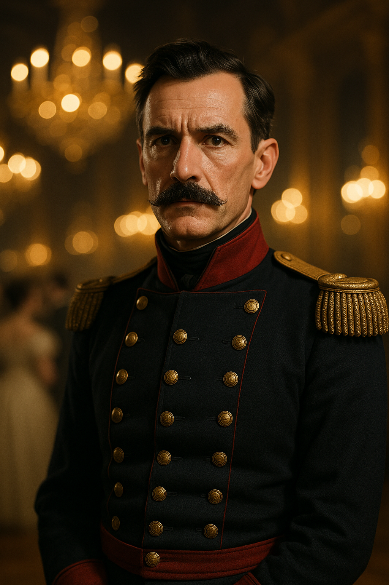

Luc Fouchard
Overview
Luc Fouchard is Mathilde Savarin’s principal enforcer and military lieutenant—the embodiment of the Aeternum Choir’s capacity for violence. Silent, competent, and utterly devoted to Savarin, Fouchard commands the “Blue Sash” militia, ex-soldiers and criminals who have been welded into a paramilitary force through a combination of ideology, terror, and addiction to Savarin’s presence.
Appearance & Demeanor
- Age: Early 40s
- Appearance: Lean, scarred, with the bearing of a soldier. He wears a blue sash as insignia—the symbol of Savarin’s militia. His eyes are cold and predatory.
- Manner: Rarely speaks. He communicates through presence and implication. When he does speak, his voice is soft and menacing.
- Voice: Low, measured, almost whispered. The quieter he speaks, the more dangerous he is.
- Distinguishing Feature: A scar runs from his left temple down to his jaw—mark of a wound that nearly killed him, from which he was “healed” by Savarin’s intervention
Personality
Fouchard is not a person in any conventional sense. He is an instrument of will, sharpened and focused entirely on Savarin’s objectives. He does not question orders. He does not hesitate. He does not feel remorse.
What makes him horrifying is that he was not always this way. Somewhere beneath the blue sash and the scar, there might be a human being—but that person is dead, killed by whatever Savarin did to save him from that nearly fatal wound.
Capabilities
- Combat (Melee) 85%
- Combat (Firearms) 75%
- Dodge 70%
- Intimidate 85%
- Stealth 70%
- Command 75% (commands the Blue Sash militia)
- Spot Hidden 60%
- Listen 65%
Characteristics (CoC 7e)
| Attribute | Score |
|---|---|
| STR 70 | CON 70 |
| SIZ 65 | DEX 75 |
| INT 55 | POW 60 |
| APP 45 | EDU 50 |
| HP 13 | MP 12 |
Build: +1D4 | DB: +1D4 | Luck: 50
Weapons
- Sword (1D8 + DB)
- Flintlock Pistol (1D10+2)
- Knife (1D4 + DB)
- Bare Hands (1D3 + DB; he is trained in unarmed combat)
Role in Chapter 2
At the Ball
Fouchard is present in uniform, identifiable by his blue sash. He is:
- Silent, standing at Savarin’s shoulder or moving through the crowd
- A visible symbol of her power and protection
- The source of the Blue Sash Incident at the garden doors
His presence is intimidating; any character who has encountered him before recognizes the threat he represents.
Motivations & Secrets
- Primary: Serve Savarin absolutely and unconditionally
- Secondary: Command and expand the Blue Sash militia
- Tertiary: Eliminate threats to Savarin’s operations with ruthless efficiency
- Hidden Secret: There is a faint scar on his chest where Savarin performed some kind of ritual on him to “heal” him from a mortal wound. This scar pulses faintly in the presence of her music.
Key Dialogue
Fouchard does not speak often, but when he does:
“Madame Savarin requires your cooperation.”
“That will not be necessary.”
(Spoken softly, as another enters a room where Fouchard stands): “You are not welcome here.”
Keeper Notes
- Fouchard is a combat threat but not a puzzle or social challenge
- He should never be reasoned with or seduced
- He is dangerous primarily through his militia and his proximity to Savarin
- If cornered, he will fight to the death without hesitation
- He should not become a recurring antagonist unless the investigators specifically pursue conflict with him
- Do not overuse him; his effectiveness lies partly in his mystery and rarity
Combat Notes
Fouchard is a trained soldier and assassin. In direct combat:
- He acts at normal initiative
- He avoids fair fights; he uses terrain, numbers, and preparation
- He will attempt to isolate and kill individual investigators rather than face the group
- His tactics are ruthless and efficient; he aims for lethal strikes
He is not superhuman, but he is deadly.
SAN Notes
Investigators who directly encounter Fouchard and sense his complete absence of humanity might make a SAN check (0/1) reflecting the existential dread of facing a person who is no longer fully human.
Campaign Design Notes
Fouchard is the Choir’s capacity for violence made manifest. He is a living warning about what Savarin is capable of—not just metaphysically but practically. He represents the Choir’s willingness to kill to achieve its goals.
Campaign History
Fouchard commanded the Blue Sash militia throughout the Lyon chapter, maintaining security at cult sites and enforcing Savarin’s control over the city’s underworld. His guards were posted at the “Practice” door in the tunnels beneath the Silkweavers’ Guild, where the surgically altered children’s choir rehearsed. The investigators conned past his guards during their second tunnel expedition by posing as courtesans brought for Fouchard’s pleasure.
Death: Fouchard died during the Silkweavers_Guild_Assault when the party regrouped and entered the cellar to rescue the children’s choir. <!-- UNVERIFIED: Exact circumstances of Fouchard’s death — Keeper memory unclear -->
Connections to Other Files
- Mathilde_Savarin — His absolute master
- Brotherhood_Operations — The militia structure he commands
- Chapter_2_Lyon — His operating region
- Commissaire_Jules_Delaroche — A person he actively blackmails
- Blue_Sashes — The organization he leads
Relationships
- Serves Mathilde Savarin — Her devoted enforcer; answers only to her
- Intimidates Commissaire Jules Delaroche — Uses threats to Delaroche's family to secure obedience